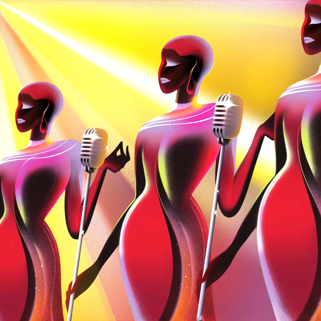
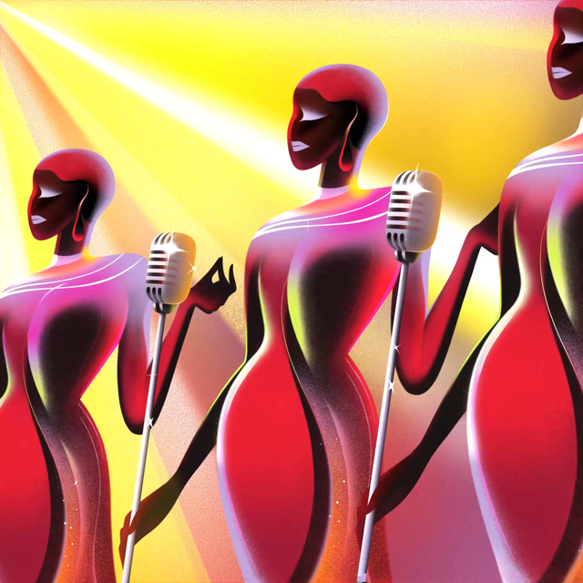
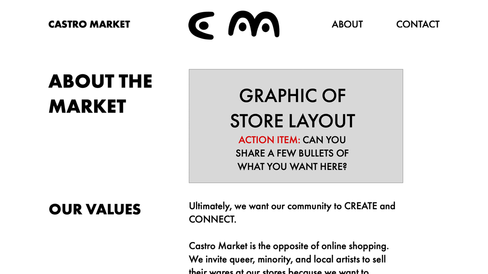
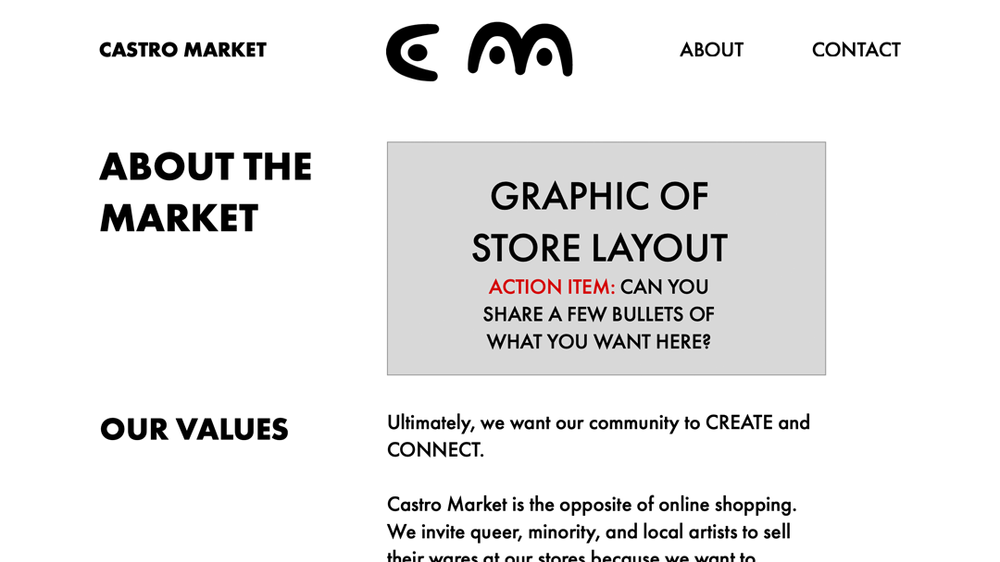
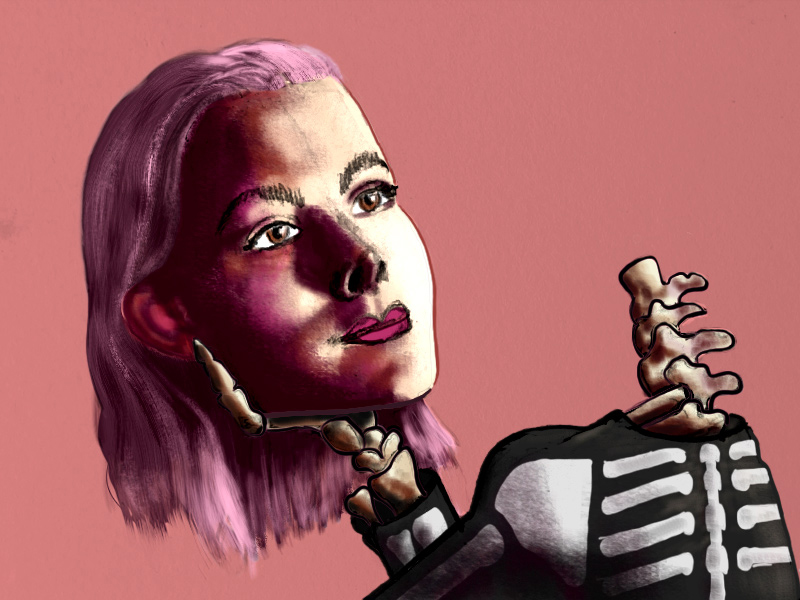
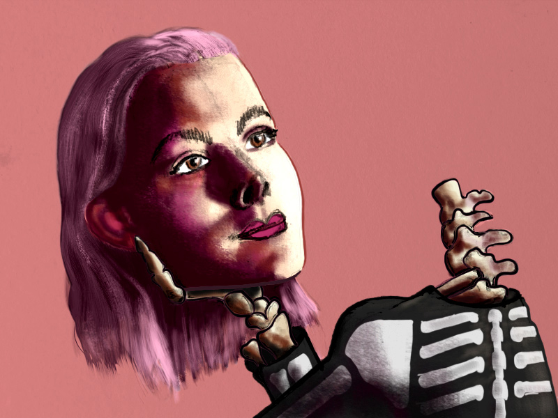

TO THE BUCK TEAM,
I’m applying for the Design Apprenticeship position at Buck.
I’m in awe of your work — especially your campaign for Spotify — and have heard great things from Kirk Johnson, a friend and an art director at Buck. Multiple contacts have told me about their respect for your company’s work, so I’m excited to begin this correspondence.
I’ve already been working for several years, and, three years ago, I decided that I wanted to pivot to more meaningful work. Since then, I’ve completed several advanced courses in Visual Media Design — and am now a few weeks away from earning a certificate — and have even built a freelance business of my own: I design websites, illustrations, and logos for clients in tech, sports, and the arts.
I’d be an asset on your Design team not only because of my visual style but also because of what I offer beyond visual design: I've spent the last nine years working as a Content Marketer, Writer, and Operations professional for media and tech companies, so I know Content and Audience from a text and copywriting perspective. And I can wear a lot of hats.
My comprehensive, diverse perspectives have served me well in my freelance work. I think in particular of my work for Yes, one of my current projects where I serve as graphic designer — and occasional copywriter or project manager. Yes is a store that will soon open its doors at Castro and Market Streets in San Francisco, and it’s essentially a semi-permanent craft fair: a multi-vendor space with high-quality furniture, clothing, food, and beverage, and a place where customers can meet the artisans themselves. A few weeks ago, when I got word that my client needed a new website A.S.A.P. — they needed it “yesterday,” they said — I designed wireframes for their web pages and even wrote their Mission Statement and some other accompanying copy within 45 minutes. This multi-disciplinary perspective is what would make me a strong contributor on your team.
I want to work at Buck for all the aforementioned reasons — the quality of your work for clients like Spotify, the caliber of your team per my friend Kirk. I also am generally interested in agency work because of their reputation as a place to learn. I thrive when I feel challenged, so I’m eager and excited to dive deep in that next position.
Thanks for your time. I’m looking forward to continuing this conversation.
Best,

Mike Anderson
 


 


 
